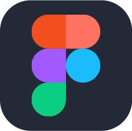
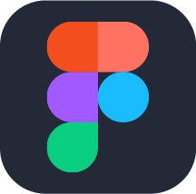

Docente

Como docente, he tenido o privilégio de transmitir conhecimento e capacitar meus estudantes para se tornarem criadores de tecnologia. Meu objetivo é inspirar e orientar as novas gerações em sua jornada de aprendizado.


Me defino como uma professora apaixonada, desenvolvedora Fullstack e designer UX/UI. Meu caminho no mundo da tecnologia me permitiu unir meu amor pelo ensino à criação de experiências digitais acessíveis e atraentes.
Como docente, he tenido o privilégio de transmitir conhecimento e capacitar meus estudantes para se tornarem criadores de tecnologia. Meu objetivo é inspirar e orientar as novas gerações em sua jornada de aprendizado.

Como desenvolvedora Fullstack, mergulho na arte da programação e na criação de aplicações web. Meu foco em acessibilidade me impulsiona a criar soluções inclusivas que alcancem todos os usuários, independentemente de suas habilidades.

Como designer UX/UI, busco a beleza na funcionalidade. Cada design que crio é fundamentado na compreensão profunda das necessidades e desejos dos usuários, criando interfaces intuitivas e atraentes.
Estoy comprometida con la educação, a tecnologia e o design, e minha maior recompensa é ver como meu trabalho impacta positivamente na vida das pessoas. Estou sempre animada para aprender e compartilhar, então não hesite em entrar em contato!
 
